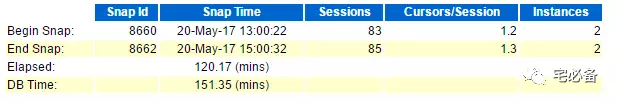
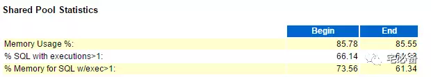
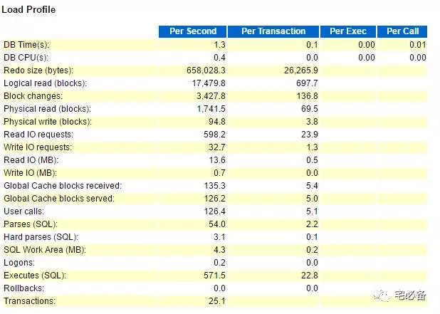
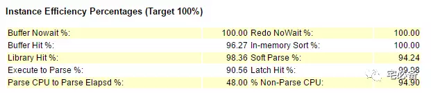
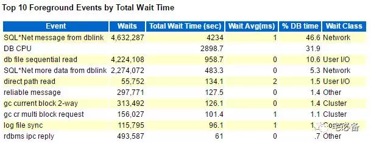
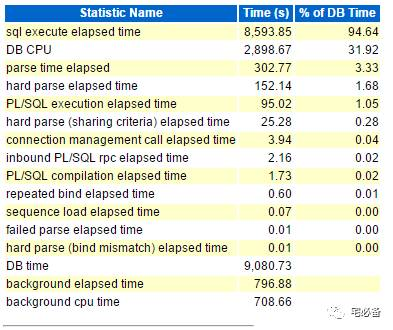
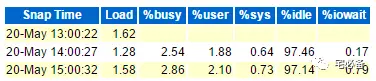
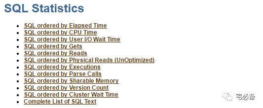
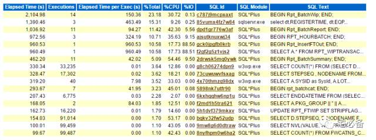

十步解析awr报告
从这期开始讲解awr报告的部分，首先讲解awr整体的部分
后续会针对不同的点进行讲解
1. 数据库细节
这部分可以看到
- 数据库的版本
- 数据库 DBID
- 数据库实例名称及实例号
- 数据库最近一次启动时间
- 数据库版本
- 数据库是否为rac
2. 主机配置信息
这部分可以看到
- 数据库主机名
- 数据库主机平台
- 服务器CPU及核数
- 服务器CPU个数
- 服务器内存大小
3. SnapShot信息

这部分可以看到
- awr报告的起止时间以及当时的session数量等
- awr报告持续时间
- DB 时间
DB Time= session time spent in database.
DB Time= CPU Time + Non IDLE wait time.
可以看到DB Time比 Elapsed大，如果大很多并且有性能问题，需再进一步分析，后面章节再说
4. Shared Pool Statistics
该视图显示的是Shared pool的状态

% SQL with executions>1指的是执行次数大于1的SQL比例，越大越好，如过小则可能是为使用绑定变量导致
5. Load Profile
这里我们可以了解系统负载的情况

首先是 DB CPU(s) per second，它说明的是每秒钟同时工作的CPU数量
从主机配置可以看到共24个虚拟cpu，而DB CPU(s) per second只有0.4 则说明cpu没有瓶颈
其次我们关注hard parses和 parses的比例，如硬解析率非常高则需要查看cursor_sharing参数和应用程序的绑定变量问题，一般都是由于绑定变量引起的
6. Instance Efficiency Percentages

上面的百分比越高越好，后面会针对每个做介绍
“% Non-Parse CPU” 指的是数据的CPU资源有94.9%用在非解析上，这样是好的
7. Top 10 Foreground Events by Total Wait Time
这里是排名前十的前台等待事件

-
首先看wait class栏位，如果是 User I/O , System I/O, Others这种的可以不用太担心，如发现Concurrency这类等待需要特别关心
-
其次看等待时间，wait avg=total wait time(总等待时间)/waits(等待次数),最主要看平均等待时间是否正常
后面章节会详细说明每个等待时间
8. Time Model Statistics
该视图说明的是各过程所占的资源比例

我们注意到所有 % of DB Time总和大于100%，因为这是一个累计的比例，下面DB CPU相关的过程包含在DB CPU中
我们需要注意的是一些异常的高占用情况，如hard parse elapsed time (硬解析时间)占用时间过长等
9. Operating System Statistics
该视图是操作系统层面的性能指标

这里需要注意%iowait，他代表CPU在等待io操作完成，这个可能是io过慢或者io操作过多导致。
10. SQL Statistics

接下来是最重要的一块，他能帮助我们定位占用相关资源的TOP SQL语句
SQL ordered by Elapsed Time

上图为根据持续时间排序的SQL语句
所有栏位可根据字面上意思得出意义
- 如executions过多可能会引起CPU占用率高
- 如executions低，而elapsed time很高，则需要优化该SQL，降低执行时间
需要注意的是execution如果为0不代表未执行，代表在awr报告的持续范围内该语句未执行完成
这里只举持续时间这个例子，其他后面章节详细说明
通过上面的十点应该会对数据库的性能及负载有了大体的了解，接下来会针对内部细节做解释，谢谢。